Sprint 2 Windows
Gestion de procesos
¿Qué es un proceso?
Un proceso es una instancia de un programa que se está ejecutando en el sistema operativo. Puede tener uno o varios hilos (threads) y consumir recursos como CPU, memoria, disco, red, etc.
Todos los procesos los podemos mirar de una manera Grafica o de forma con el CMD
Grafica
Para verlo de manera grafica (con interfaz) tendremos que usar el Administrador de tareas este se abre pulsando Ctrl + Shift + Esc o haciendo click derecho en la barra de tareas y dandole a administrador de tareas
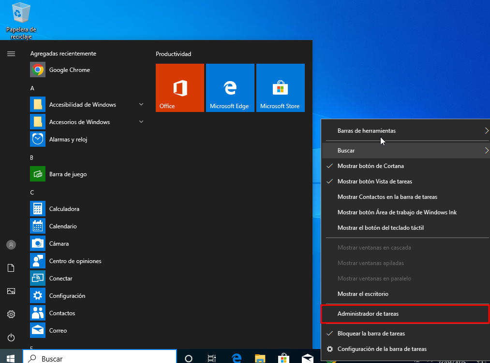
Aqui podremos finalizar procesos simplemente seleccionando la aplicacion o el proceso que queremos finalizar y darle abajo a la derecha "Finalizar Tarea"
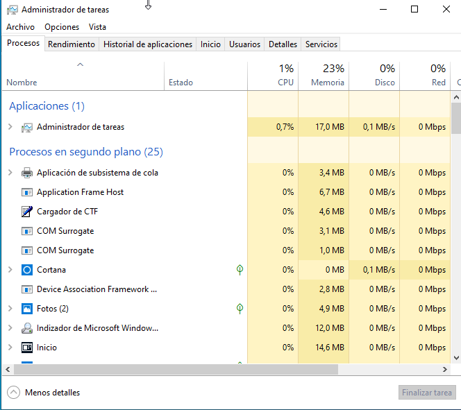
CMD
Con el CMD es algo mas complejo para ver los procesos tendremos que ejecutar el comando tasklist
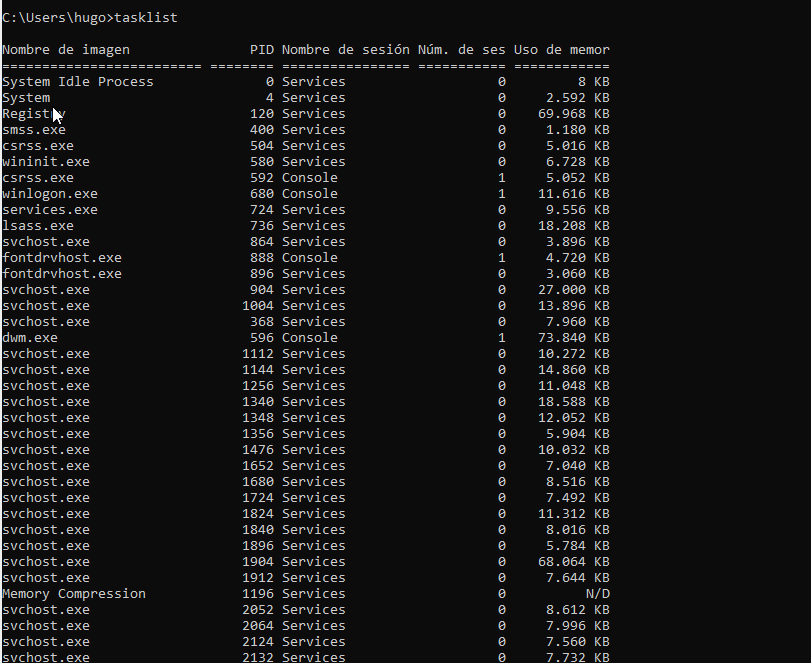
Para fializar el proceso tendremos que ejecutar el siguiente comando taskkill /IM nombre.exe /F
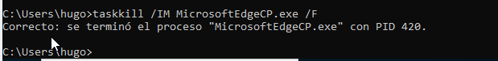
Tambien se podra finalizar por el PID taskkill /PID numero /F
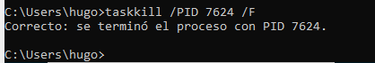
Y podremos iniciar programas/procesos con el comando start programa.exe
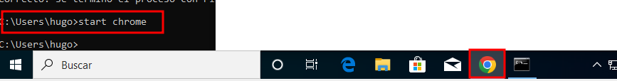
Gestion de usuario, grupos y permisos
Tipos de cuentas de usuario
Administrador --> Control total del sistema (instalar programas, modificar configuraciones, crear usuarios, etc.)
Estándar --> Uso básico del equipo, sin acceso a configuraciones avanzadas
Invitado (Guest) --> Acceso muy limitado, no guarda datos ni configuraciones (deshabilitada por defecto)
Grupos de usuarios
Administradores --> Tienen control total Usuarios --> Acceso básico, sin privilegios administrativos Invitados --> Permisos limitados y temporales Usuarios del escritorio remoto --> Pueden iniciar sesión por RDP Operadores de copia de seguridad --> Pueden hacer backup y restore aunque no tengan permisos sobre los archivos
Grafica
Abrimos el Panel de control y vamos a Cuentas de usuario
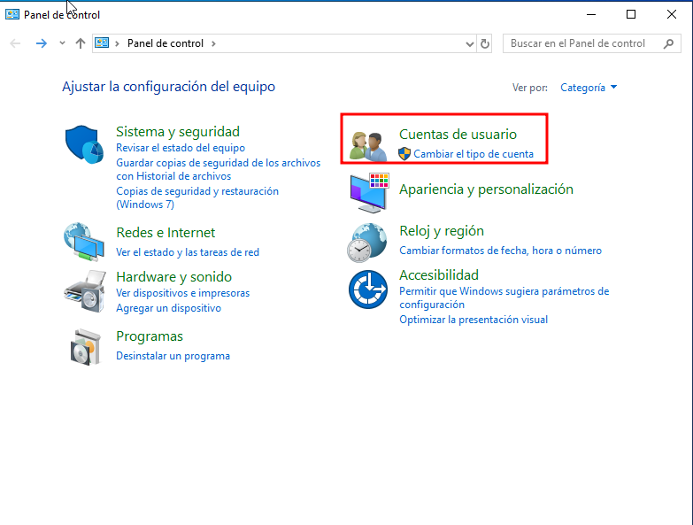
Le damos a la opcion de administrar otra cuenta
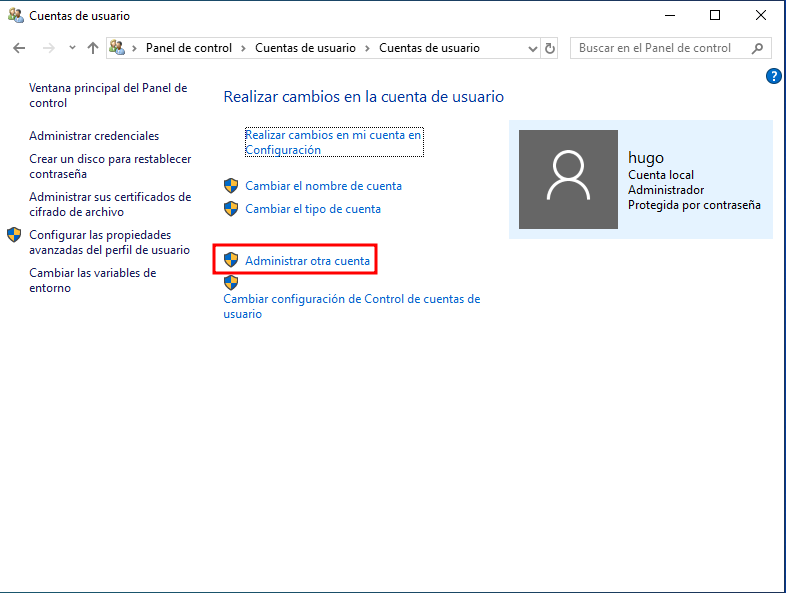
Le damos a Agregar un nuevo usuario en Configuracion y ahi podemos crear un usuario de manera grafica y editarlos en cualquier momento que queramos
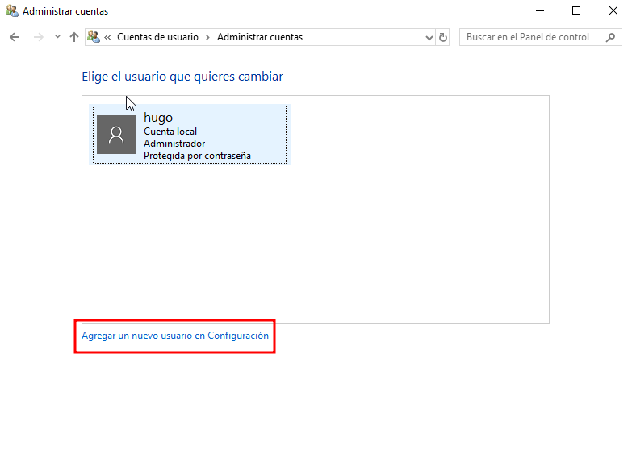
Terminal
net user --> lista todos los usuarios
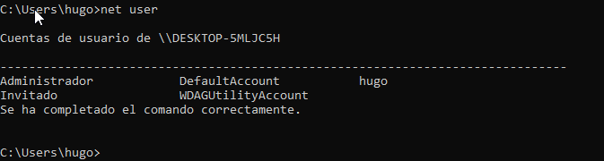
net user nombre /add --> Crea un usuario
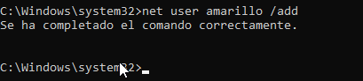
net user nombre * --> Cambia la contraseña
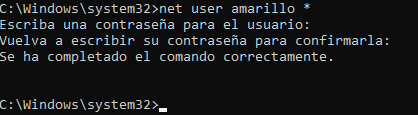
net user nombre /delete --> Elimina ususario
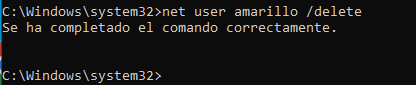
net localgroup --> Lista todos los grupos
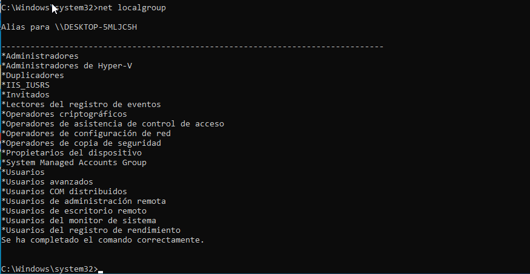
net localgroup grupo /add --> Crea un grupo
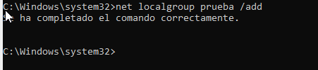
net localgroup grupo usuario /add --> Añade usuario a un grupo
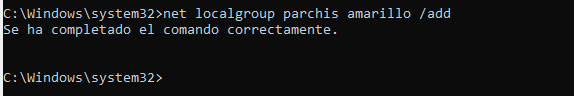
Permisos Basicos
Lectura --> Ver contenido
Escritura --> Modificar Contenido
Ejecución --> Ejecutar archivos
Para poder modificar los archivos de una carpeta le damos click derecho a la misma y le damos a propiedades
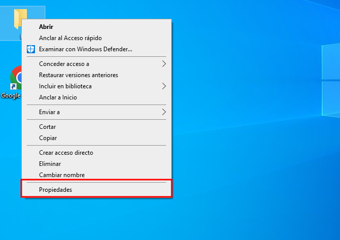
Le damos a "Seguridad"
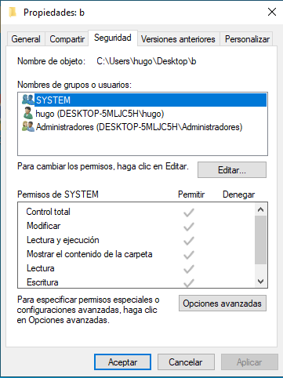
Le damos a editar y ya podremos tocar los permisos de tanto usuarios como grupos
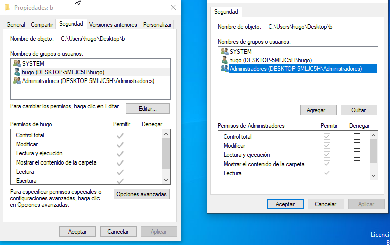
Prueba de permisos
Sistemas de archivos y particiones
Es el método que usa el sistema operativo para almacenar, organizar, leer y escribir datos en una partición o unidad de almacenamiento.
Principales sistemas de archivos en Windows
NTFS --> Sistema moderno por defecto en Windows. Soporta archivos grandes, permisos, cifrado, compresión, etc.
FAT32 --> Compatible con muchos sistemas, pero limitado a archivos de 4 GB y particiones de hasta 32 GB.
exFAT --> Diseñado para memorias USB y discos externos. Soporta archivos grandes y es compatible con Windows y macOS.
Tipos de Particiones
Primaria --> Partición principal donde se puede instalar un sistema operativo. Windows requiere al menos una primaria para arrancar. Extendida --> No se puede usar directamente, pero permite crear varias unidades lógicas dentro de ella. Lógica --> Subdivisión dentro de una partición extendida. Se comporta como una unidad independiente.
Herramientas para gestionar particiones en Windows
Administrador de discos (GUI)
Le damos a la combinacion de teclas de Windows + R y escribimos diskmgmt.msc
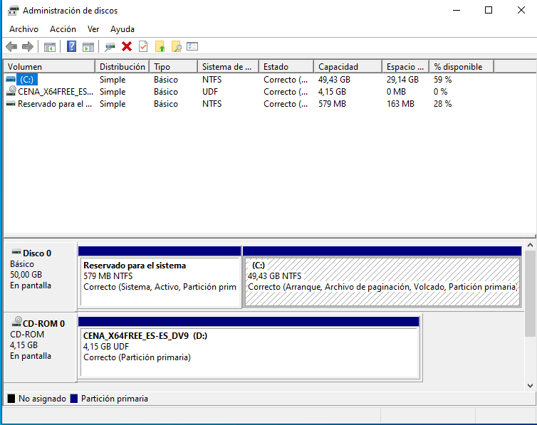
Diskpart (CMD)
Colocamos dikskpart en la terminal para poder acceder a la modificaicon de discos
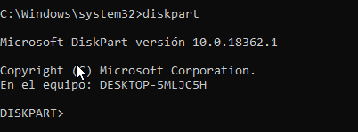
Colocamos list disk para listar los discos que tenemos
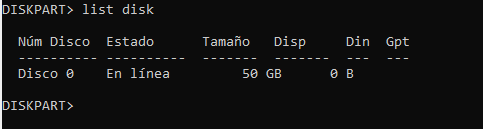
colocamos select disk Nº para poder modificar el disco que seleccionamos
- Nº = Numero de disco
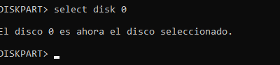
Podemos poner list partition para listar las particiones del disco
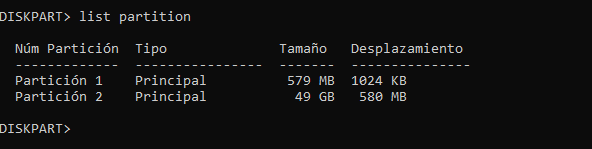
Para crear una particion utilizaremos create partition primary
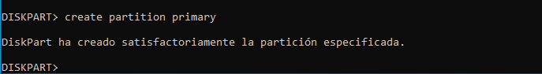
Formatearemos la particion a ntfs con el comando format fs=ntfs quick
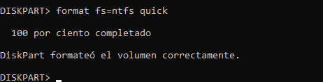
Y le asignamos una letra a la particion con el comadno assign letter=B
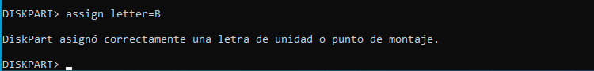
Y volvemos a ver como se a creado la particion correctamente
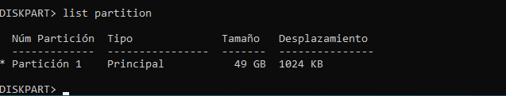
Copias de seguridad y automatizacion de tareas
¿Qué es una copia de seguridad?
Una copia de seguridad es una réplica de archivos, configuraciones o del sistema completo que se guarda en otro lugar para evitar pérdida de datos en caso de fallo, error humano, virus o daño físico.
Tipos de copia de seguridad
Completa --> Copia todos los archivos y datos seleccionados. Incremental --> Solo copia los archivos modificados desde la última copia. Diferencial --> Copia los archivos modificados desde la última copia completa.
Como hacer Copias de Seguridad
Abrimos la Configuracion > Actualizacion y seguridad > Copia de seguridad
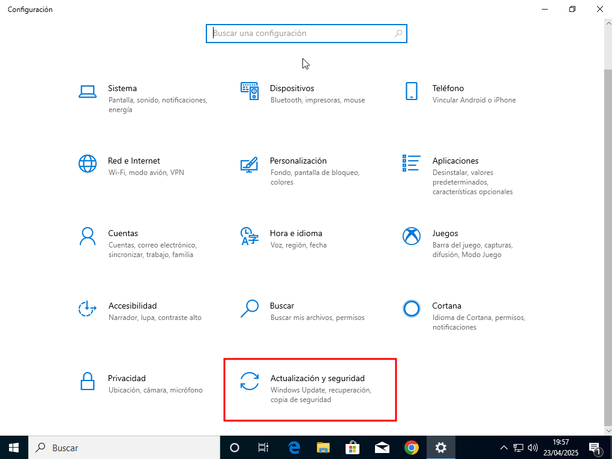
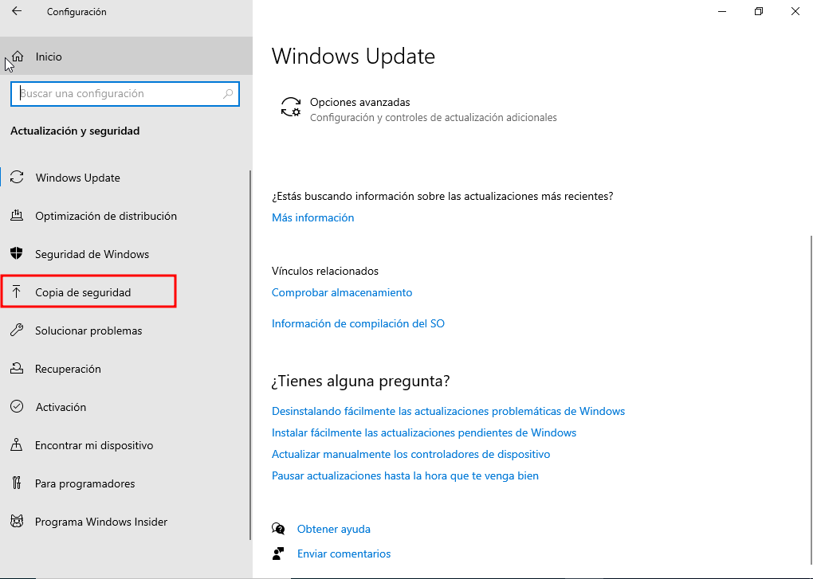
Asignamos donde queremos que se haga la copia de seguridad
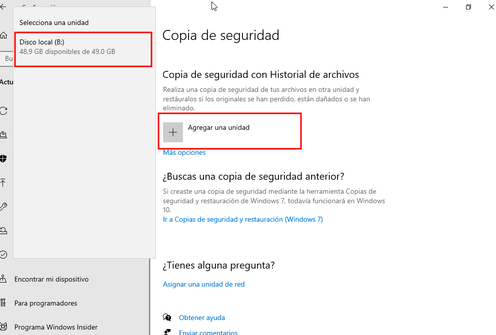
De esta manera tendremos copias de seguridad periodicas automaticamente en ese mismo disco duro.
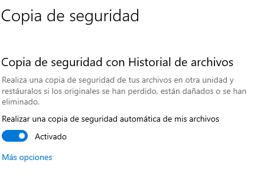
En caso de que queramos hacer una al momento le damos a mas opciones > hacer ahora una copia de seguridad
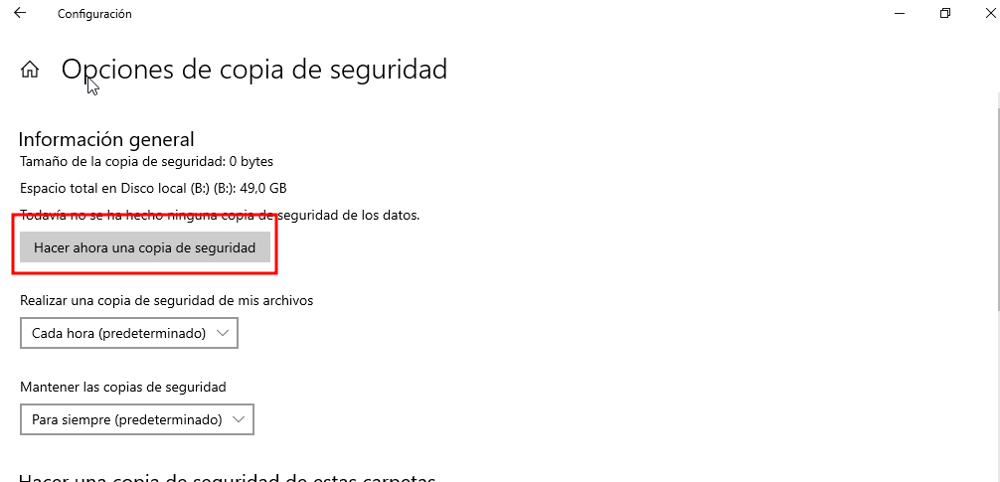
Automatización de tareas
La automatización de tareas permite que ciertas acciones se ejecuten de forma automática y programada, sin intervención del usuario.
Herramienta integrada de Windows que permite programar tareas como ejecutar programas, scripts, hacer copias, etc...
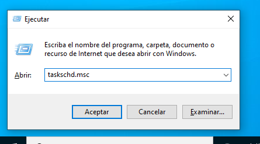
Para programar una tarea iriamos a "crear tarea" en la parte de la derecho y tendriamos la opcion de programar un script que se ejecutase cuando nosotros queramos.
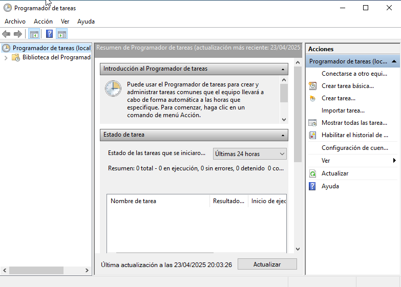
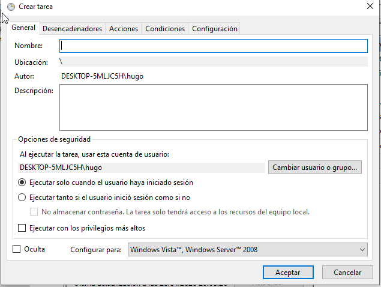
Al no saber hacer Scripts lo dejare ahi.
Cuotas de discos
¿Qué es una cuota de disco?
Una cuota de disco es una limitación del espacio que un usuario puede usar en una unidad del sistema (por ejemplo, en el disco C:). Esta herramienta es especialmente útil para:
-
Evitar que un usuario llene el disco con demasiados archivos.
-
Gestionar recursos en equipos compartidos o servidores.
-
Controlar el uso del almacenamiento de forma individual.
Cómo activar y configurar cuotas de disco
Abrimos el Explorador de archivos, le damos click derecho sobre el disco duro y le damos a propiedades.
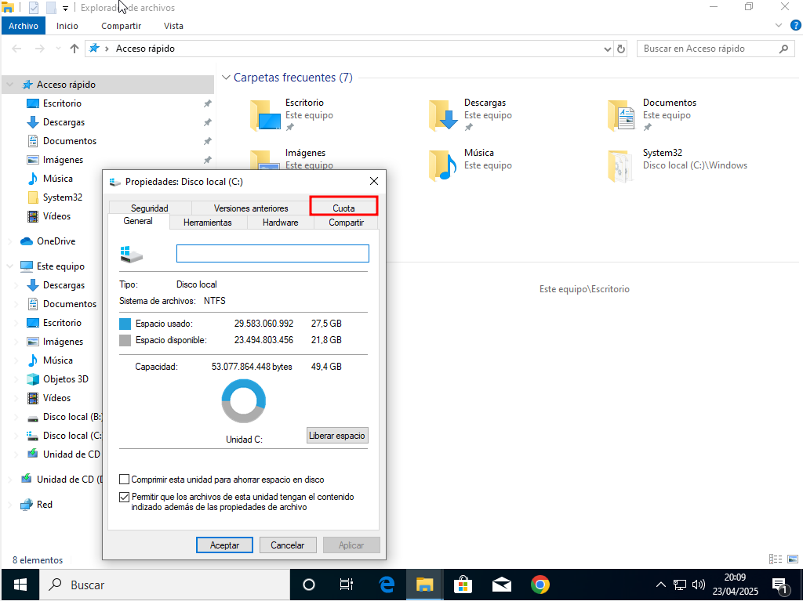
Seleccionamos la pestaña cuota y mostramos la configuracion de la misma
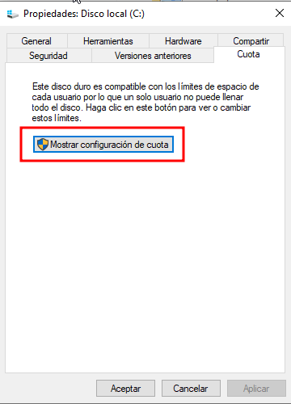
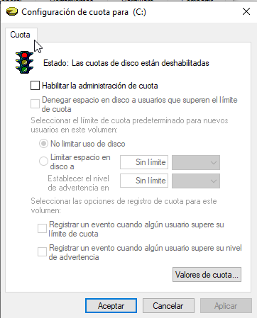
Habilitamos la Administracion de cuota y ya podriamos modificar como queramos la misma
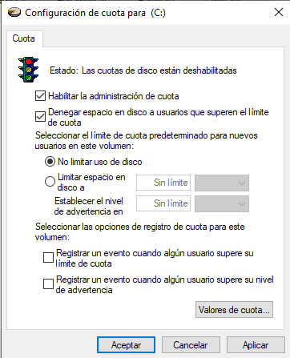